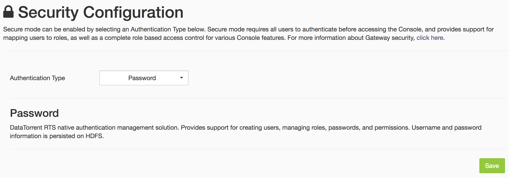
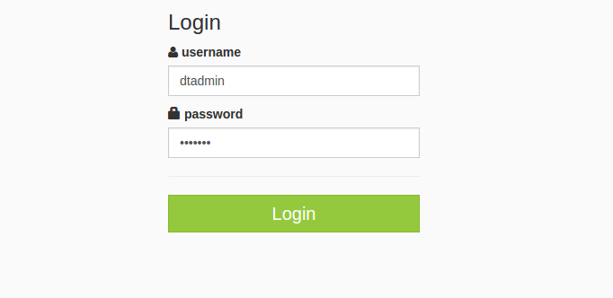
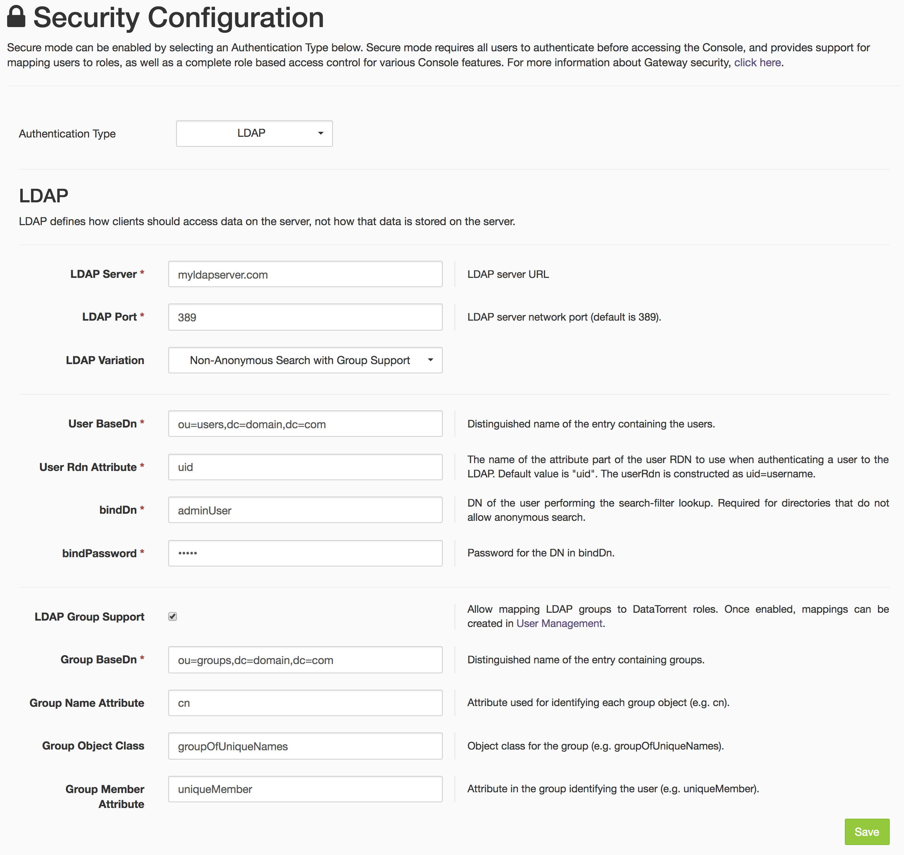
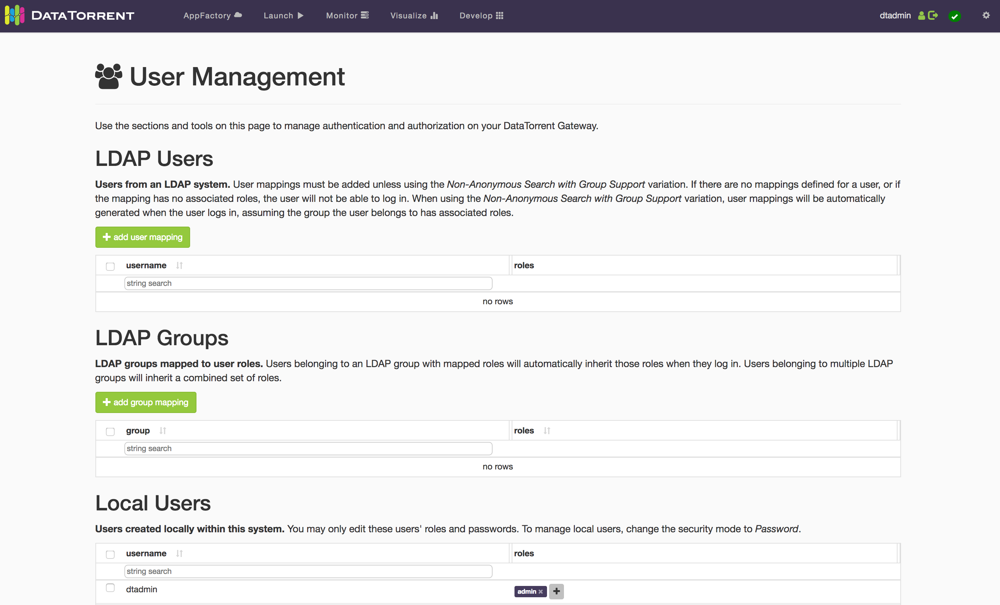
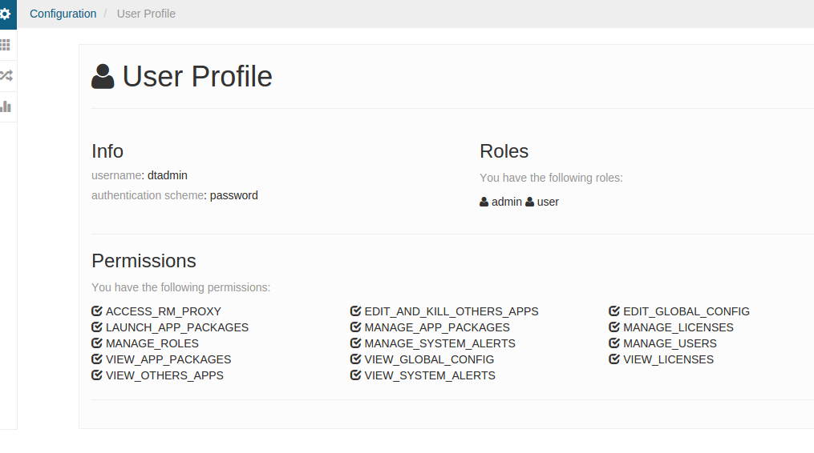
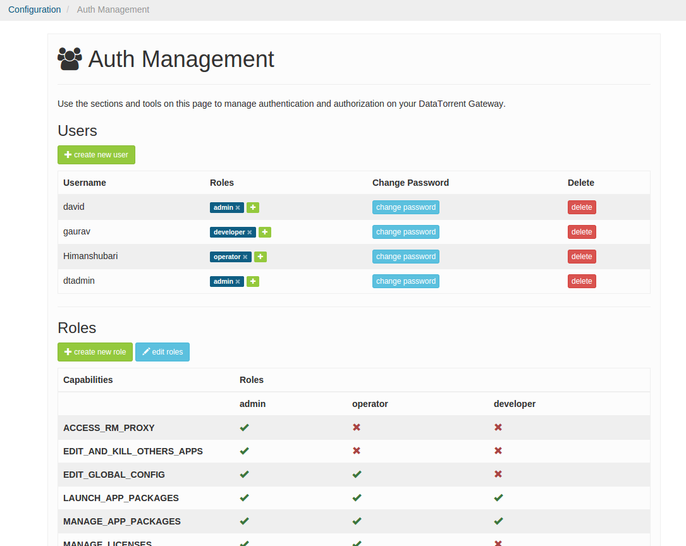

DataTorrent Gateway Security
DataTorrent Gateway is a service that provides the backend functionality for the DataTorrent UI Console and processes the web service requests from it. The service provides real-time information about running applications, allows changes to applications, launches new applications among various other operations. Refer to dtGateway for details on the Gateway service and dtManage for the UI Console.
Broadly security in Gateway can be classified into two categories, frontend security and backend security. Frontend security deals with access to Gateway service which mainly involves securing the web service calls. This includes aspects such as user authentication and authorization. The backend security deals with security aspects when Gateway is communicating with a secure Hadoop infrastructure.
After installation of DataTorrent RTS both these aspects can be configured manually as described in the following sections although work is being done to enable this configuration in the UI Console during installation itself and post installation.
Kerberos Secure Mode
Kerberos is the de-facto authentication mechanism supported in Hadoop. When secure mode is enabled in Hadoop, requests from clients to Hadoop are authenticated using Kerberos. In this mode Gateway service needs Kerberos credentials to communicate with Hadoop. The credentials should match the user that the DT Gateway service is running under.
In a multi-user installation DT Gateway is typically running as
user dtadmin and the Kerberos credentials specified should be for this
user. They are specified in the dt-site.xml configuration file located in the config folder under the installation which is typically /opt/datatorrent/current/conf ( or ~/datatorrent/current/conf for local install). For a single user installation where gateway is running as the user, the Kerberos credentials will be the user’s credentials.
The snippet below shows how the credentials can be specified in the configuration file.
<property>
<name>dt.gateway.authentication.principal</name>
<value>kerberos-principal-of-gateway-user</value>
</property>
<property>
<name>dt.gateway.authentication.keytab</name>
<value>absolute-path-to-keytab-file</value>
</property>
Long running applications
In secure mode, long running applications have additional requirements. Refer to the Token Refresh section in the Apache Apex security document.
Authentication
DataTorrent Gateway has support for authentication and when it is configured users have to authenticate before they can access the UI Console. Various authentication mechanisms are supported and this gives enterprises the flexibility to extend their existing authentication mechanism already in use within the enterprise to Gateway. It also supports roles, mapping of groups or roles from the external authentication mechanism to roles and supports role based authorization.
The different authentication mechanisms supported by Gateway are
- Password Authentication
- LDAP Authentication
- Kerberos Authentication
- JAAS Authentication for Active Directory, PAM, etc
JAAS is a extensible authentication framework that supports different types of authentication mechanisms by plugging in an appropriate module.
Password Authentication
Password security is simple to set up and is ideal for a small to medium set of users. It comes with role-based access control, so users can be assigned roles, and roles can be assigned granular permissions (see User Management). This is the only authentication mechanism available that does not depend on any external systems. The users will be managed locally by the Gateway. When enabled, all users will be presented with the login prompt before being able to use the DT Console.
To set up password security, on the Security Configuration page select Password from the Authentication Type dropdown, and save. Allow the Gateway to restart.

When the Gateway has restarted, you should be prompted for username and password. Log in as the default admin user dtadmin with password dtadmin.

Once authenticated, active username and an option to log out is presented in the top right corner of the DT Console screen.
Additional users and roles can be created and managed on the User Management page.
Note: Don't forget to change your dtadmin user's password!
Password Authentication via dt-site.xml
Password authentication can alternatively be configured outside the Console by performing following two steps:
-
Add a property to
dt-site.xmlconfiguration file, typically located under/opt/datatorrent/current/conf( or~/datatorrent/current/conffor local install).<configuration> ... <property> <name>dt.gateway.http.authentication.type</name> <value>password</value> </property> ... </configuration> -
Restart the Gateway. If running Gateway in local mode use
dtgateway restartinstead.sudo service dtgateway restart
LDAP Authentication
LDAP is a directory based authentication mechanism used in many enterprises. If your organization uses LDAP for authentication, the LDAP security option is ideal for giving your existing users access to RTS, with the role-based access control and group mapping features.
There are four variations for configuring LDAP authentication:
- Identity
- Provide the parent DN of your users and specify the RDN attribute of users.
- Users will authenticate using their RDN attribute value as their username.
- Anonymous & User Search Filter
- Provide the parent DN of your users and specify a search filter to identify users.
- Users will authenticate using an appropriate username that matches the parameters defined in the search filter.
- Identity and Anonymous Search
- Provide the parent DN of your users, specify the RDN attribute of users, and a search filter.
- Users will authenticate using their RDN attribute value as their username, as well as the parameters defined in the search filter.
- Non-Anonymous Search with Group Support
- Provide basic DN info for users, DN and password of a user able to perform a non-anonymous search, and optional group support info.
- With group support disabled, users need to be added in User Management before logging in. Users authenticate with their RDN attribute value as their username.
- With group support enabled, users do not have to be added in User Management before logging in. Users authenticate with their RDN attribute value as their username. They will be assigned roles mapped to their LDAP group. For example, user Peter is part of GroupA (admin) and GroupB (developer, operator); Peter will be assigned roles admin, developer, and operator upon login.
When group support is not configured, users must be assigned a role before they are able to log in. This means users can be restricted from logging in (blacklisted) by removing all of their roles.
Note: If migrating from Password mode, the existing users will be carried over as "local users" and can still login as if in Password mode. It is recommended to keep only the dtadmin user and delete the rest. This is because local users cannot be added or deleted once LDAP mode is activated.

After setting up LDAP in the Security Configuration page, the LDAP Users section will appear in the User Management page. If you have group support enabled, the LDAP Groups section will also appear. Existing users (carried over from Password mode), will be placed in the Local Users sections. Local users cannot be added or deleted in LDAP mode, but their roles and passwords can be modified.

To configure LDAP via dt-site.xml, check out the JAAS Authentication - LDAP section below.
Kerberos Authentication
Kerberos authentication can optionally be enabled for Hadoop web access. When configured, all web browser access to Hadoop management consoles are Kerberos authenticated. Web services are also Kerberos authenticated. This authentication is performed using a protocol called SPNEGO which is Kerberos over HTTP. Please refer to the administration guide of your Hadoop distribution on how to enable this. The web browsers must also support SPNEGO, most modern browsers do and should be configured to use SPNEGO for the specific URLs being accessed. Please refer to the documentation of the individual browsers on how to configure this. Gateway handles the SPNEGO authentication needed when communicating with the Hadoop web-services if Kerberos authentication is enabled for Hadoop web access.
Kerberos authentication can be enabled for UI Console as well. When it is enabled access to the Gateway web-services is Kerberos authenticated. The browser should be configured for SPNEGO authentication when accessing the Console. A user typically obtains a master ticket first by logging in to kerberos system in a terminal emulator using kinit. Then, user launches a browser to access the Console URL. The browser will use the master ticket obtained by kinit earlier to obtain the necessary security tokens to authenticate with the Gateway.
When this authentication is enabled the first authenticated user that accesses the system is assigned the admin role as there are no other users in the system at this point. Any subsequent authenticated user that access the system starts with no roles. The admin user can then assign roles to these users. This behavior can be changed by configuring an external role mapping. Please refer to the External Role Mapping in the Authorization using external roles section below for that.
Additional configuration is needed to enable Kerberos authentication for the Console. A separate set of kerberos credentials are needed. These can be same as the Hadoop web-service Kerberos credentials which are typically identified with the principal HTTP/HOST@DOMAIN. A few other configuration properties are also needed. These can be specified in the same “dt-site.xml” configuration file as the DT Gateway authentication configuration described in the Operation and Installation Guide. This authentication can be set up using the following steps.
-
Add the following properties to
dt-site.xmlconfiguration file, typically located under/opt/datatorrent/current/conf( or~/datatorrent/current/conffor local install)<configuration> ... <property> <name>dt.gateway.http.authentication.type</name> <value>kerberos</value> </property> <property> <name>dt.gateway.http.authentication.kerberos.principal</name> <value>{kerberos-principal-of-web-service}</value> </property> <property> <name>dt.gateway.http.authentication.kerberos.keytab</name> <value>{absolute-path-to-keytab-file}</value> </property> <property> <name>dt.gateway.http.authentication.token.validity</name> <value>{authentication-token-validity-in-seconds}</value> </property> <property> <name>dt.gateway.http.authentication.cookie.domain</name> <value>{http-cookie-domain-for-authentication-token}</value> <property> <name>dt.gateway.http.authentication.cookie.path</name> <value>{http-cookie-path}</value> </property> <property> <name>dt.gateway.http.authentication.signature.secret</name> <value>{absolute-path-of-secret-file-for-signing-authentication-tokens} </value> </property> </configuration>Note that the kerberos principal for web service should begin with HTTP/… All the values for the properties above except for the property
dt.gateway.http.authentication.typeshould be replaced with the appropriate values for your setup. -
Restart the Gateway by running
sudo service dtgateway restart( when running Gateway in local mode usedtgateway restartcommand)
JAAS Authentication
JAAS or Java Authentication and Authorization Service is a pluggable and extensible mechanism for authentication. It is an authentication framework where the actual authentication is performed by a JAAS login module plugin which can be configured using a configuration file.
The general configuration steps for enabling any JAAS based authentication mechanism is described below. Subsequent sections will cover the specific configuration details for LDAP, Active Directory and PAM. However JAAS is not limited to just these three mechanisms. Any other JAAS compatible mechanism can be used by specifying the appropriate module in the configuration. Also if there isn't a JAAS module available for an authentication mechanism a new one can be developed using the JAAS API and used here.
Below are the general steps for configuring a JAAS authentication mechanism
-
Add the following properties to
dt-site.xmlconfiguration file, typically located under/opt/datatorrent/current/conf(or~/datatorrent/current/conffor local install).<configuration> ... <property> <name>dt.gateway.http.authentication.type</name> <value>jaas</value> </property> <property> <name>dt.gateway.http.authentication.jaas.name</name> <value>name-of-jaas-module</value> </property> ... </configuration>The
dt.gateway.http.authentication.jaas.nameproperty specifies the login module to use with JAAS and the next step explains the process for configuring it. -
If the login module requires a custom callback handler it needs to be specified. What a callback handler is and how it can be specified is described in the next section Callback Handlers.
-
The name of the login module specified above should be configured with the appropriate settings for the plugin. This is module specific configuration. This can be done in a file named .java.login.config in the home directory of the user Gateway is running under. If DataTorrent RTS was installed as a superuser, Gateway would typically run as dtadmin and this file path would typically be
/home/dtadmin/.java.login.config, if running as a regular user it would be~/.java.login.config. The sample configurations for LDAP and PAM are shown in the next sections. -
The classes for the login module may need to be made available to Gateway if they are not available in the default classpath. This can be done by specifying the jars containing these classes in a classpath variable that is used by Gateway.
The following step shows how to do this
a. Edit the
custom-env.shconfiguration file, typically located under/opt/datatorrent/current/conf( or~/datatorrent/current/conffor local install) and append the list of jars obtained above to the DT_CLASSPATH variable. This needs to be added at the end of the file in the section for specifying local overrides to environment variables. The line would look likeexport DT_CLASSPATH=${DT_CLASSPATH}:path/to/jar1:path/to/jar2:.. -
Restart the Gateway by running
sudo service dtgateway restart(when running Gateway in local mode usedtgateway restartcommand)
Similar to Kerberos when this authentication is enabled the first authenticated user that accesses the system is assigned the admin role as there are no other users in the system at this point. Any subsequent authenticated user that access the system starts with no roles. The admin user can then assign roles to these users. This behavior can be changed by configuring an external role mapping. Please refer to the External Role Mapping in the Authorization using external roles section below for that.
Callback Handlers
In JAAS authentication, a login module may need a custom callback to be handled by the caller. These callbacks are typically used to provide authentication credentials to the login module. DataTorrent RTS provides a default callback handler that handles the common callbacks but it may not be sufficient for all login modules like in the Active Directory case described below.
RTS also supports specification of a custom callback handler to handle custom callbacks of a login module. The custom callback handler can be specified using the property dt.gateway.http.authentication.jaas.callback.class.name and when this property is not specified the default callback handler is used. The property can be specified in the dt-site.xml configuration file and as follows
<configuration>
...
<property>
<name>dt.gateway.http.authentication.jaas.callback.class.name</name>
<value>full-class-name-of-callback</value>
</property>
...
</configuration>
Custom callback handlers can be implemented by extending the default callback handler so they get the support for the common callbacks or they can be implemented from scratch. The Jetty callback handler described below also extends the default callback handler. The default callback handler implementation is implemented in the com.datatorrent.lib.security.auth.callback.DefaultCallbackHandler class available in com.datatorrent:dt-library artifact.
LDAP
An alternative way to enable LDAP authentication, instead of LDAP Authentication section above, is to follow the JAAS configuration steps described above with the following specific details for the individual steps.
-
For step 1 of the JAAS authentication configuration process, pick a name for the JAAS module for LDAP. You can choose a name like
ldapthat is appropriate for the current scheme. This can be done by specifying the value of thedt.gateway.http.authentication.jaas.nameproperty to beldap. This name should now be configured with the appropriate settings as described in the next step. -
For step 2, no special callback handler needs to be specified as the default callback handler can handle the callbacks.
-
For step 3, the JAAS name specified above should be configured in the .java.login.config file with the appropriate LDAP settings. There are different JAAS authentication modules available for LDAP. One of them is supplied by default in Java. It is the Sun LdapLoginModule class. A sample configuration when using this module is shown below
ldap { com.sun.security.auth.module.LdapLoginModule required userProvider="ldap://ldap-server-hostname" authIdentity="uid={USERNAME},ou=users,dc=domain,dc=com"; };Note that the first string before the open brace, in this case
ldapmust match the jaas name specified in step 1. The first propertycom.sun.security.auth.module.LdapLoginModulespecifies the actual JAAS plugin implementation class providing the LDAP authentication. The fields that appear next are LDAP settings specific to your organization and could be different from ones shown above. The above settings are only provided as a reference example.The setting
authIdentityis used to derive the identity of the user that will be used for authentication with the server. Here it is specifying the pattern to derive the LDAP distinguished name (dn) for the user that will be used along with the password supplied by the user for authentication with the LDAP server. The{USERNAME}variable in the setting will be replaced by the username specified by the user.Refer to the javadoc for all the configuration options available with this module.
-
For step 4, no extra jars are needed as the module is available in Java
-
Restart the gateway as described in step 5
Active Directory
Active Directory is used when authenting users in Microsoft Windows domains. The authentication protocol includes Microsoft's implementation of Kerberos as well as LDAP. In this section we will look into the configuration needed for LDAP authentication with Active Directory.
Follow the JAAS configuration steps described above with the following specific details.
-
For step 1 of the JAAS authentication configuration process, pick a name for the JAAS module. You can choose a name like
adthat is appropriate for the current scheme. This can be done by specifying the value of thedt.gateway.http.authentication.jaas.nameproperty to bead. This name should now be configured with the appropriate settings as described in the next step. -
For step 2, no special callback handler needs to be specified as the default callback handler can handle the callbacks.
-
For step 3, the JAAS name specified above should be configured with the appropriate Active Directory settings in the .java.login.config file.
In active directory authentication the user id is typically specified as
username@domainand sometimes justusername. Once the user is authenticated the user id needs to be mapped to the LDAP node for the user. This is done by specifying a search filter criteria which is then used to search for the user node in the directory tree starting from a specified base.Below is an example showing a sample configuration for active directory authentication with the Sun LdapLoginModule
ad { com.sun.security.auth.module.LdapLoginModule required userProvider="ldap://ad.server.com/cn=users,dc=domain,dc=com" userFilter="samAccountName={USERNAME}" authIdentity="{USERNAME}@my.domain.com"; };The setting
userFilterspecifies the search criteria to look for the user in the Active Directory tree. The{USERNAME}variable in the setting is replaced with the username supplied by the user. The settingauthIdentityspecifies the pattern to derive the user id with the domain from the specified username.The search filter can have more complex logical expressions like the one shown below
userFilter="(&(|(samAccountName={USERNAME})(userPrincipalName={USERNAME})(cn={USERNAME}))(objectClass=user))"An Active Directory or a LDAP browser client can be used to browse the Active Directory to determine the correct filter to use find the users.
-
For step 4, no extra jars are needed as the module is available in Java
-
Restart the gateway as described in step 5
Jetty module & binding
Sometimes a single authIdentity pattern like the one used above cannot be used to identity the users because of the way they are configured in the Active Directory, for an enterprise. An example is the case where multiple domains are being used and a single domain name cannot be specified in the authIdentity.
In those cases a fixed identity called the root identity or a system identity is used to connect to the server. Then the user node is searched with the search criteria and supplied username, from the node the user directory name is extracted and it is used along with the supplied password for the authentication.
A different JAAS login module that supports the system identity is needed as the Sun LdapLoginModule does not support this functionality. Jetty implements one such login module. The steps to configure this module are as follows.
-
For step 1 of the JAAS authentication configuration process, the name
adcan be used. -
For step 2, a special callback handler is needed to handle the Jetty module callbacks as they are not the common callbacks. There is an implementation of the callback handler for Jetty that is provided by DataTorrent RTS. It is the
com.datatorrent.contrib.security.jetty.JettyJAASCallbackHandlerclass in thecom.datatorrent:dt-contribartifact.As explained in the Callback Handlers section above, the callback handler can be specified in the
dt-site.xmlconfig file using a property as shown below<configuration> ... <property> <name> dt.gateway.http.authentication.jaas.callback.class.name </name> <value> com.datatorrent.contrib.security.jetty.JettyJAASCallbackHandler </value> </property> ... </configuration> -
For step 3, the configuration for the Jetty module is specified in the
.java.login.configfile. A sample configuration for this module is shown belowad { org.eclipse.jetty.plus.jaas.spi.LdapLoginModule required contextFactory="com.sun.jndi.ldap.LdapCtxFactory" hostname="ad.server.com" port="389" bindDn="serviceId@my.domain.com" bindPassword="Password1" forceBindingLogin="true" userBaseDn="DC=my,DC=domain,DC=com" userIdAttribute="samAccountName" userObjectClass="person"; };The property
org.eclipse.jetty.plus.jaas.spi.LdapLoginModulespecifies the actual JAAS plugin implementation class providing the LDAP authentication. The propertiesbindDnandbindPasswordspecify the directory name and password for the system identity respectively. TheuserIdAttributeanduserObjectClasssettings are used as search criteria to search for the user directory node under theuserBaseDnpath in the directory.Refer to the javadoc for all the configuration options available with this module.
-
The Gateway service in DataTorrent RTS 3.0 is compatible with Jetty 8. The Jetty login module in this version is in the
jetty-plusjar. The following versionjetty-plus-8.1.10.v20130312.jaris known to work but other compatible versions should work as well. The jar file can be obtained from the Jetty project or from maven central.Along with the jetty jar the dt-contrib jar containing the callback handler and it's dependencies should also be included. It is available on the DataTorrent maven server here. Pick the version matching the DataTorrent RTS version you are using. The dt-contrib artifact has a dependency to
com.datatorrent:dt-libraryartifact. It is also available on the maven server here.The jars can be specified in the gateway script file described in step 4 above as follows
export DT_CLASSPATH=${DT_CLASSPATH}:path/to/jetty-plus-8.1.10.v20130312.jar:path/to/dt-contrib-<version>.jar:path/to/dt-library-<version>.jar -
Restart the gateway as described in step 5
PAM
PAM (Pluggable Authentication Module) is a Linux system equivalent of JAAS where applications call the generic PAM interface and the actual authentication implementations called PAM modules are specified using configuration files. PAM is the login authentication mechanism in Linux so it can be used for example to authenticate and use local Linux user accounts in Gateway. If organizations have configured other PAM modules, they can be used in Gateway as well.
PAM is implemented in C language and has a C API. JPam is a Java PAM bridge that uses JNI to interface with PAM. It is available at JPAM website and the website also has detailed documentation on how to install and set it up. JPam has a JAAS login module and hence can be used in Gateway via JAAS. Note that any other PAM implementation can be used as long as a JAAS login module is available.
To enable JPAM follow the JAAS configuration steps described above with the following specific details.
-
JPAM has to be first installed on the system. Please follow the installation instructions from the JPAM website.
-
For step 1 of the JAAS authentication configuration process, pick a name for the JPAM authentication module. You can choose a name like
net-sf-jpamwhich JPAM typically uses as the PAM configuration name. This can be done by specifying the value of thedt.gateway.http.authentication.jaas.nameproperty to benet-sf-jpam. This name should now be configured with the appropriate settings as described in the next step. -
For step 2, no special callback handler needs to be specified as the default callback handler can handle the callbacks
-
For step 3, the JAAS name specified above should be configured in the .java.login.config file with the appropriate JPAM settings . A sample configuration is shown below
net-sf-jpam { net.sf.jpam.jaas.JpamLoginModule required serviceName="net-sf-jpam"; };
Note that the first string before the open brace, in this case,
net-sf-jpam must match the jaas name specified in step 1. The first
property within the braces net.sf.jpam.jaas.JpamLoginModule specifies
the actual JAAS plugin implementation class providing the JPAM
authentication. The next settings are JPAM related settings. The setting serviceName specifies the PAM service which would need to be further configured in /etc/pam.d/net-sf-jpam to specify the PAM modules to use. Refer to PAM documentation on how to configure a PAM service with PAM modules. If using Linux local accounts system-auth could be specified as the PAM module in this file. The above settings are only provided as a reference example and a different name can be chosen for serviceName.
-
For step 4, add the JPam jar to the DT_CLASSPATH variable. The JPam jar should be available in the JPam installation package and typically has the filename format
JPam-<version>.jarwhere<version>denotes the version, version 1.1 has been tested.export DT_CLASSPATH=${DT_CLASSPATH}:path/to/JPam-<version>.jar -
Restart the gateway as described in step 5 above
Group Support
For group support such as using LDAP groups for authorization refer to the Authorization using external roles section below.
Hadoop user mapping
When authentication is enabled, applications are launched on the Hadoop cluster, by default, as the user matching the user name of the authenticated user. This mapping behavior, to select the user to use on the Hadoop side, is configurable and different options are available. To configure the behavior use the following setting
<property>
<name>dt.gateway.hadoop.user.strategy</name>
<value>STRATEGY</value>
</property>
The STRATEGY in the property above identifies the mapping behavior and the following options are available
Authenticated user
To specify this behavior, use AUTH_USER as the value for STRATEGY. As explained earlier, this leads to applications being launched with the same user name as the authenticated user. This is the default behavior even when the property is not specified.
In Kerberos secure mode, DT Gateway would still connect to Hadoop by using its Kerberos credentials, namely credentials of the user the DT Gateway service is running under (default dtadmin) but impersonate the authenticated user, to launch the application. This impersonation requires additional configuration on Hadoop side and it is explained in the Hadoop Configuration sub-section under the Impersonation section in the Apache Apex security document.
Gateway user
To specify this behavior, use GATEWAY_USER as the value for STRATEGY. In this mode, the Hadoop user is the same as the DT Gateway service user (default dtadmin) and no impersonation is necessary.
Specified user
To specify this behavior, use SPECIFIED_USER as the value for STRATEGY. In this mode, a specific user name can be specified for the Hadoop user and it is used no matter who the authenticated user is. The Hadoop user name is specified by an additional property
<property>
<name>dt.gateway.hadoop.user.name</name>
<value>username</value>
</property>
The impersonation behavior described in the Authenticated user section above applies here as well and so do the requirements mentioned there.
Authorization
When any authentication method is enabled, authorization will also be enabled. DT Gateway uses roles and permissions for authorization. Permissions are possession of the authority to perform certain actions, e.g. to launch apps, or to add users. Roles have a collection of permissions and individual users are assigned to one or more roles. What roles the user is in dictates what permissions the user has.
Permissions
The list of all possible permissions in the DT Gateway is as follow:
ACCESS_RM_PROXY
Allow HTTP proxying requests to YARN’s Resource Manager REST API
EDIT_GLOBAL_CONFIG
Edit global settings
EDIT_OTHER_USERS_CONFIG
Edit other users’ settings
LAUNCH_APPS
Launch Apps
MANAGE_LICENSES
Manage DataTorrent RTS licenses
MANAGE_OTHER_USERS_APPS
Manage (e.g. edit, kill, etc) applications launched by other users
MANAGE_OTHER_USERS_APP_PACKAGES
Manage App Packages uploaded by other users
MANAGE_ROLES
Manage roles (create/delete roles, or assign permissions to roles)
MANAGE_SYSTEM_ALERTS
Manage system alerts
MANAGE_USERS
Manage users (create/delete users, change password)
UPLOAD_APP_PACKAGES
Upload App Packages and use the app builder
VIEW_GLOBAL_CONFIG
View global settings
VIEW_LICENSES
View DataTorrent RTS licenses
VIEW_OTHER_USERS_APPS
View applications launched by others
VIEW_OTHER_USERS_APP_PACKAGES
View App Packages uploaded by other users
VIEW_OTHER_USERS_CONFIG
Edit other users’ settings
VIEW_SYSTEM_ALERTS
View system alerts
Default Roles
DataTorrent RTS ships with three roles by default. The permissions for these roles have been set accordingly but can be customized if needed.
Admin
An administrator of DataTorrent RTS is intended to be able to install, manage & modify DataTorrent RTS as well as all the applications running on it. They have ALL the permissions.
Operator
Operators are intended to ensure DataTorrent RTS and the applications running on top of it are always up and running optimally. The default permissions assigned to Operators, enable them to effectively troubleshoot the entire RTS system and the applications running on it. Operators are not allowed however to develop or launch new applications. Operators are also not allowed to make system configuration changes or manage users.
Here is the list of default permissions given to operators
Note that VIEW_OTHER_USERS_APPS and VIEW_OTHER_USERS_APP_PACKAGES are in the list. This means all users in the “operator” role will have read access to all apps and all app packages in the system. You can remove those permissions from the “operator” role using the Console if this is not desirable.
Developer
Developers need to have to ability to develop, manage and run applications on DataTorrent RTS. They are not allowed to change any system settings or manage licenses.
Here is the list of default permissions given to developers
App Permissions and App Package Permissions
Users can share their running application instances and their application packages with certain roles or certain users on a per-instance or per-package basis. Users can specify which users or while roles have read-only or read-write access. In addition, users can set their own defaults so they does not have to make permission change every time they launch an app or uploads an app package.
The default for app and app package sharing is that the “operator” role has read-only permission.
The Console does not yet support managing App Permissions or App Package Permissions. But one can manage App Permissions and App Package Permissions using the Gateway REST API with URI’s /ws/v2/apps/{appid}/permissions and /ws/v2/appPackages/{user}/{name}/permissions respectively. Please refer to the DT Gateway REST API document and here for examples on how to use the REST API.
Viewing and Managing Auth in the Console
Viewing User Profile
After you are logged in on the Console, click on the Configuration tab on the left, and select “User Profile”. This gives you the information of the logged in user, including what roles the user is in, and what permissions the user has. 
Administering Auth
From the Configuration tab, click on “Auth Management”. On this page, you can perform the following tasks:
- Create new users
- Delete users
- Change existing users’ passwords
- Assign roles to users
- Create roles
- Assign permissions to roles

DataTorrent RTS installation comes with three preset roles (admin, operator, and developer). You can edit the permissions for those roles except for admin.
Authorization using external roles
When using an external authentication mechanism such as Kerberos or JAAS, roles defined in these external systems can be used to control authorization in DataTorrent RTS. There are two steps involved. First support for external roles has to be configured in Gateway. This is described below in the sections Kerberos roles and JAAS roles. Then a mapping should be specified between the external roles and DataTorrent roles to specify which role should be used for a user when the user logs in. How to setup this mapping is described in the External Role Mapping section below. When this mapping is setup only users with roles that have a mapping are allowed to login the rest are not. The next sections describe how to configure the system for handling external roles.
Kerberos roles
When Kerberos authentication is used the role for the user is derived from the principal. If the principal is of the form user/group@DOMAIN the group portion is used as the external role and no additional configuration is necessary.
JAAS roles
To use JAAS roles the system should be configured first to recognize
these roles. When a user is authenticated with JAAS a list of principals
is returned for the user by the JAAS plugin login module. If the module supports roles then some of these principals are for roles and these role principals need to be identified from the list. Additional configuration is needed to do
this and it is specific to the login module implementation. Specifically the Java class name identifying the role principal is needed. This can be specified using the dt.gateway.http.authentication.jaas.role.class.name property in the dt-site.xml configuration file as shown below
<configuration>
...
<property>
<name>dt.gateway.http.authentication.jaas.role.class.name</name>
<value>full-class-name-of-role</value>
</property>
...
</configuration>
LDAP Groups
When using LDAP with JAAS, to utilize the LDAP roles, a LDAP login module supporting roles should be used. Any LDAP module that supports roles can be used. Jetty login module has support for roles. Refer to Jetty module & binding section above for more details about this module. The configuration steps are as follows.
-
The Jetty login module returns the roles in role principal classes. The class name identifying the role is
org.eclipse.jetty.plus.jaas.JAASRole. This should be specified using thedt.gateway.http.authentication.jaas.role.class.nameproperty in thedt-site.xmlconfiguration file as described in the section above.Also as described in the Jetty module & binding section a custom callback handler is needed for the Jetty login module.
A sample configuration file with all the properties is shown below
<configuration> ... <property> <name>dt.gateway.http.authentication.type</name> <value>jaas</value> </property> <property> <name>dt.gateway.http.authentication.jaas.name</name> <value>ldap</value> </property> <property> <name>dt.gateway.http.authentication.jaas.role.class.name</name> <value>org.eclipse.jetty.plus.jaas.JAASRole</value> </property> </property> <name> dt.gateway.http.authentication.jaas.callback.class.name </name> <value> com.datatorrent.contrib.security.jetty.JettyJAASCallbackHandler </value> </property> ... </configuration> -
If the system identity is used then the Jetty login module can be used as is and the jar dependencies in the step below can be specified as described in the Jetty module & binding section.
However, if system identity is not used something different needs to be done. An issue was discovered with the Jetty login module supplied with Jetty 8 that prevented LDAP authentication to be successful even when the user credentials were correct. DataTorrent has a fix for this and is providing the login module with the fix in a separate package called
dt-auth. The class name for the module iscom.datatorrent.auth.jetty.JettyLdapLoginModule. Thedt-authproject along with the source can be found here Auth. DataTorrent is working on submitting this fix back to Jetty project so that it gets back into the main source.The JAAS configuration file as described in LDAP section under Enabling JAAS Auth should be configured to specify the ldap settings for roles. A sample configuration containing role settings for the
dt-authlogin module is shown below.ldap { com.datatorrent.auth.jetty.JettyLdapLoginModule required hostname="ldap-server-hostname" port="389" authenticationMethod="simple" userBaseDn="ou=users,dc=domain,dc=com" userIdAttribute="uid" userRdnAttribute="uid" roleBaseDn="ou=groups,dc=domain,dc=com" roleNameAttribute="cn" contextFactory="com.sun.jndi.ldap.LdapCtxFactory"; };The
roleNameAttributeandroleBaseDnsettings are used to identify the role and theuserRdnAttributesetting is used the identify the users that belong to the role. The values for these settings are dependent on attributes names are being used in your LDAP directory server.Similar configuration can be used when the original Jetty login module is being used with the system id, the module class would be Jetty login module class and the binding settings would be specified as described in the Jetty module & binding section.
Refer to the javadoc for the role and other configuration options available with this module.
-
If the Jetty login module is being used as is then the path specification instructions described in the Jetty module & binding section can be used.
If the login module containing the DataTorrent fix, dt-auth, is being used then it's jar along with the Jetty module dependencies containing the role class, the dt-contrib jar containing the custom callback handler along with its dependencies should all be made available for Gateway. The jars can be obtained from the DataTorrent Auth project.
Please follow the instructions in the above url to obtain the project jar files. After obtaining the jar files they can be specified in the gateway script file as
export DT_CLASSPATH=${DT_CLASSPATH}:path/to/jar1:path/to/jar2:.. -
Restart the Gateway as described earlier
External Role Mapping
External role mapping is specified to map the external roles to the DataTorrent roles. For example users from an LDAP group called admins should have the admin role when using the Console. This can be specified by doing the following steps
-
In the configuration folder typically located under
/opt/datatorrent/current/conf( or~/datatorrent/current/conffor local install) edit the file called external-roles or create the file if it not already present. In this file each line contains a mapping from an external role to a datatorrent role separated by a delimiter ‘:’ An example listing isadmins:admin staff:developerThis maps the external role admins to the DataTorrent role admin and external role staff to the DataTorrent role developer.
-
Restart the Gateway as described earlier
Administering Using Command Line
You can also utilize the dtGateway REST API (under /ws/v2/auth) to add or remove users and to change roles and passwords. Here are the examples with password authentication.
Log in as admin:
% curl -c ~/cookie-jar -XPOST -H "Content-Type: application/json" -d '{"userName":"admin","password":"admin"}' http://localhost:9090/ws/v2/login
This curl command logs in as user “admin” (with the default password “admin”) and stores the cookie in ~/cookie-jar
Changing the admin password:
% curl -b ~/cookie-jar -XPOST -H "Content-Type: application/json" -d '{"newPassword":"xyz"}' http://localhost:9090/ws/v2/auth/users/admin
This uses the “admin” credential from the cookie jar to change the password to “xyz” for user “admin”.
Adding a second admin user:
% curl -b ~/cookie-jar -XPUT -H "Content-Type: application/json" -d '{"password":"abc","roles": [ "admin" ] }' http://localhost:9090/ws/v2/auth/users/john
This command adds a user “john” with password “abc” with admin access.
Adding a user in the developer role:
% curl -b \~/cookie-jar -XPUT -H "Content-Type: application/json" -d '{"password":"abc","roles": ["developer"] (http://localhost:9090/ws/v1/login) }' http://localhost:9090/ws/v2/auth/users/jane
This command adds a user “jane” with password “abc” with the developer role.
Listing all users:
% curl -b ~/cookie-jar http://localhost:9090/ws/v2/auth/users
Getting info for a specific user:
% curl -b ~/cookie-jar http://localhost:9090/ws/v2/auth/users/john
This command returns the information about the user “john”.
Removing a user:
% curl -b ~/cookie-jar -XDELETE http://localhost:9090/ws/v2/auth/users/jane
This command removes the user “jane”.
Setting up SSL Keystore in Gateway
An SSL keystore is needed for your gateway to enable HTTPS in the gateway and to configure SMTP with password authentication. SMTP configuration is needed for the gateway to send email alerts as described in System Alerts.
Follow the steps below to set up the keystore.
-
Generate an SSL keystore if you don’t have one. Instruction on how to generate an SSL keystore is here: http://docs.oracle.com/cd/E19509-01/820-3503/ggfen/index.html. Note down the keystore password and full path of the keystore that you need to provide in the next step.
-
Add two properties to
dt-site.xmlconfiguration file, typically located under/opt/datatorrent/current/conf(or~/datatorrent/current/conffor local install).<configuration> ... <property> <!-- this is the full path to the SSL keystore you created --> <name>dt.gateway.sslKeystorePath</name> <value>{/path/to/keystore}</value> </property> <property> <!-- this is the keystore password --> <name>dt.gateway.sslKeystorePassword</name> <value>{keystore-password}</value> </property> ... </configuration> -
Perform any additional steps required for "Enabling HTTPS" or "SMTP Password Encryption" use-case as described below.
-
Restart the Gateway by running
sudo service dtgateway restart(when running Gateway in local mode use
dtgateway restartcommand)
Enabling HTTPS in Gateway
To enable HTTPS in the Gateway after setting up the keystore as described above, you have to add the following
property to the dt-site.xml configuration file
<configuration>
...
<property>
<name>dt.attr.GATEWAY_USE_SSL</name>
<value>true</value>
</property>
...
</configuration>
Setting up a Key for SMTP Password Encryption
Add another key to the keystore created above using the instructions mentioned in http://docs.oracle.com/cd/E19509-01/820-3503/ggfen/index.html. For example:
keytool -genkey -alias smtpenc-alias -keyalg RSA -keypass <key password> -storepass <store password> -keystore gwkeystore.jks
Note down the alias you used for the key (smtpenc-alias in the above command). Remember to use the same key password and store password as the ones you used in the previous command where you created the keystore.
Add the following property to dt-site.xml to indicate the alias to be used for SMTP Password Encryption:
<configuration>
...
<property>
<name>dt.gateway.ssl.alias.password.encryption</name>
<value>smtpenc-alias</value>
</property>
...
</configuration>